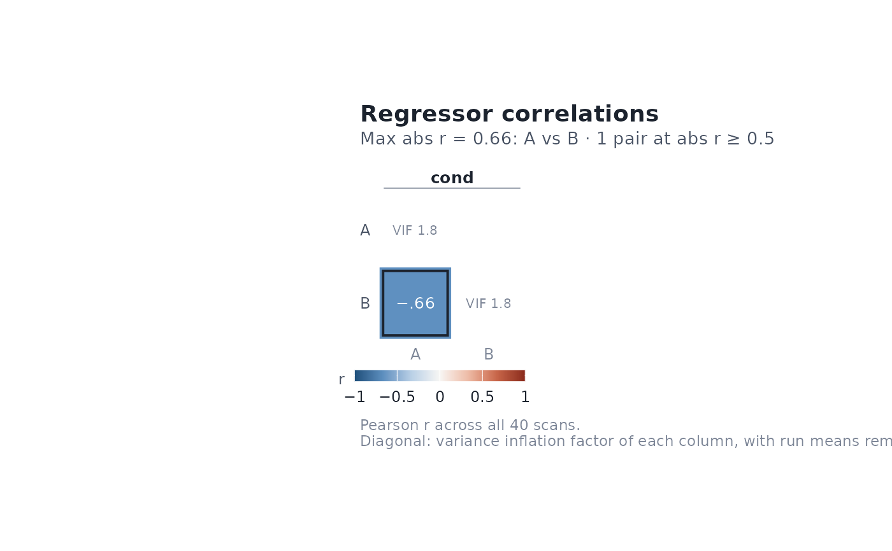
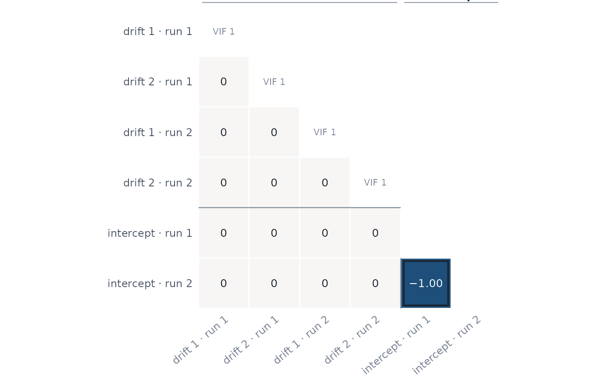

Shows the pairwise correlations between design-matrix columns as the lower
triangle of a matrix. The fill is the package's diverging palette, fixed
at [-1, 1] by default with a neutral zero; for up to 20 columns each cell
also prints r (two decimals for up to 10 columns). Cells with abs(r) at or
above flag_threshold are outlined and counted in the subtitle, which
also names the most strongly correlated pair.
Usage
# S3 method for class 'event_model'
correlation_map(
x,
rotate_x_text = TRUE,
method = c("pearson", "spearman"),
half_matrix = TRUE,
limits = c("fixed", "data"),
absolute_limits = NULL,
annotate = NULL,
flag_threshold = 0.5,
vif_threshold = 5,
title = "Regressor correlations",
subtitle = NULL,
...
)
# S3 method for class 'baseline_model'
correlation_map(
x,
method = c("pearson", "spearman"),
half_matrix = TRUE,
limits = c("fixed", "data"),
absolute_limits = NULL,
rotate_x_text = TRUE,
annotate = NULL,
flag_threshold = 0.5,
vif_threshold = 5,
title = "Baseline regressor correlations",
subtitle = NULL,
...
)Arguments
- x
An
event_modelorbaseline_model.- rotate_x_text
Logical; angle column labels when they would overlap.
- method
Correlation method,
"pearson"(default) or"spearman". VIFs are always based on linear regression.- half_matrix
Logical; if
TRUE(default) draw only the lower triangle. WithFALSE, both triangles are drawn.- limits
"fixed"(default) spans the fill scale over [-1, 1];"data"makes it symmetric about 0 up to the largest abs(r), and says so in the legend title.- absolute_limits
Deprecated logical kept for compatibility;
FALSEis equivalent tolimits = "data".- annotate
Logical or
NULL; print r in each cell.NULL(default) annotates when there are at most 20 columns.- flag_threshold
Cells with abs(r) at or above this value are outlined.
- vif_threshold
VIFs at or above this value are flagged.
- title, subtitle
Plot title and subtitle.
- ...
Passed to
ggplot2::geom_tile().
Details
Pairwise correlations miss multicollinearity, so the diagonal shows each
column's variance inflation factor, VIF_j = 1 / (1 - R2_j), from
regressing column j on all other columns after removing each run's mean
(per-run intercepts). VIFs at or above vif_threshold are drawn in a
warning colour, and a column that is an exact linear combination of
others is marked "aliased".
Correlations are computed over all scans of the full design matrix, with
runs concatenated (as stated in the caption). Columns keep design order and
are grouped by term, so the map lines up with design_map().
Examples
des <- data.frame(
onset = c(0, 10, 20, 30),
run = 1,
cond = factor(c("A", "B", "A", "B"))
)
sframe <- fmrihrf::sampling_frame(blocklens = 40, TR = 1)
emod <- event_model(onset ~ hrf(cond), data = des, block = ~run,
sampling_frame = sframe)
correlation_map(emod)

bmod <- baseline_model(basis = "poly", degree = 2,
sframe = fmrihrf::sampling_frame(c(40, 40), TR = 1))
correlation_map(bmod)
